<!DOCTYPE html>
<html>

<head><meta name="generator" content="Hexo 3.8.0">
  <meta charset="utf-8">
  
    <title>
      
        2022年前半の遠征を振り返る（その1） | 
            ほしよみ大学生のブログ
    </title>
    <meta name="viewport" content="width=device-width">
    <meta name="description" content="お久しぶりです今年に入ってから，遠征記を全く書いていないことに気づきました．原因は TOA を使うようになったことでしょう．眼視というのはメシエマラソンのような修行をしない限り，また機材重量を特に気にしなければひじょうに楽なもので，観望地に着けば機材をドンと置いて，極軸はなんとなく極望にポラリスが入るように合わせ，ケーブルも電源とコントローラの二本のみです．自分で好きな天体を眺めるもよし，一緒に居">
<meta name="keywords" content="写真,天体写真,カメラ,レンズ,機材,鏡筒,赤道儀,遠征記">
<meta property="og:type" content="article">
<meta property="og:title" content="2022年前半の遠征を振り返る（その1）">
<meta property="og:url" content="http://dabokun.github.io/2022/05/15/00000063-2022-first-half-lookback01/index.html">
<meta property="og:site_name" content="ほしよみ大学生のブログ">
<meta property="og:description" content="お久しぶりです今年に入ってから，遠征記を全く書いていないことに気づきました．原因は TOA を使うようになったことでしょう．眼視というのはメシエマラソンのような修行をしない限り，また機材重量を特に気にしなければひじょうに楽なもので，観望地に着けば機材をドンと置いて，極軸はなんとなく極望にポラリスが入るように合わせ，ケーブルも電源とコントローラの二本のみです．自分で好きな天体を眺めるもよし，一緒に居">
<meta property="og:locale" content="ja">
<meta property="og:image" content="http://dabokun.github.io/2022/05/15/00000063-2022-first-half-lookback01/card.jpg">
<meta property="og:updated_time" content="2022-06-05T12:03:43.058Z">
<meta name="twitter:card" content="summary_large_image">
<meta name="twitter:title" content="2022年前半の遠征を振り返る（その1）">
<meta name="twitter:description" content="お久しぶりです今年に入ってから，遠征記を全く書いていないことに気づきました．原因は TOA を使うようになったことでしょう．眼視というのはメシエマラソンのような修行をしない限り，また機材重量を特に気にしなければひじょうに楽なもので，観望地に着けば機材をドンと置いて，極軸はなんとなく極望にポラリスが入るように合わせ，ケーブルも電源とコントローラの二本のみです．自分で好きな天体を眺めるもよし，一緒に居">
<meta name="twitter:image" content="http://dabokun.github.io/2022/05/15/00000063-2022-first-half-lookback01/card.jpg">
<meta name="twitter:creator" content="@dabo_pic">
      
        <link rel="alternative" href="/atom.xml" title="ほしよみ大学生のブログ" type="application/atom+xml">
        
          
            <link rel="icon" href="/images/favicon.png">
            
              <link rel="stylesheet" href="/css/style.css">
                <!--[if lt IE 9]><script src="//html5shiv.googlecode.com/svn/trunk/html5.js"></script><![endif]-->
                
                  <script data-ad-client="ca-pub-1350688970555904" async src="https://pagead2.googlesyndication.com/pagead/js/adsbygoogle.js"></script>
</head></html>
<body>
  <div id="container">
    <div class="mobile-nav-panel">
	<i class="icon-reorder icon-large"></i>
</div>
<header id="header">
	<h1 class="blog-title">
		<a href="/">ほしよみ大学生のブログ</a>
	</h1>
	<nav class="nav">
		<ul>
			<li><a href="/">Home</a></li><li><a href="/categories">Categories</a></li><li><a href="/tags">Tags</a></li><li><a href="/archives">Archives</a></li><li><a href="/about">About</a></li><li><a href="/work">Work</a></li>
			<li><a id="nav-search-btn" class="nav-icon" title="Search"></a></li>
			<li><a href="https://github.com/dabokun"></a>
			</li>
			<li><a href="https://twitter.com/dabo_pic"></a></li>
			<li><a href="/atom.xml" id="nav-rss-link" class="nav-icon" title="RSS Feed"></a>
			</li>
		</ul>
	</nav>
	<div id="search-form-wrap">
		<form action="//google.com/search" method="get" accept-charset="UTF-8" class="search-form"><input type="search" name="q" class="search-form-input" placeholder="Search"><button type="submit" class="search-form-submit">&#xF002;</button><input type="hidden" name="sitesearch" value="http://dabokun.github.io"></form>
	</div>
</header>
    <div id="main">
      <article id="post-00000063-2022-first-half-lookback01" class="post">
	<footer class="entry-meta-header">
		<span class="meta-elements date">
			<a href="/2022/05/15/00000063-2022-first-half-lookback01/" class="article-date">
  <time datetime="2022-05-15T08:58:56.000Z" itemprop="datePublished">2022-05-15</time>
</a>
		</span>
		<span class="meta-elements author">astr0dab0</span>
		<div class="commentscount">
			
			<a href="http://dabokun.github.io/2022/05/15/00000063-2022-first-half-lookback01/#disqus_thread" class="article-comment-link">Comments</a>
			
		</div>
	</footer>
	
	<header class="entry-header">
		
  
    <h1 class="article-title entry-title" itemprop="name">
      2022年前半の遠征を振り返る（その1）
    </h1>
  

	</header>
	<div class="entry-content">
		
		
		<div id="toc" class="toc-article">
			<p class="toc-title">目次</p>
			<ol class="toc"><li class="toc-item toc-level-3"><a class="toc-link" href="#お久しぶりです"><span class="toc-number">1.</span> <span class="toc-text">お久しぶりです</span></a></li><li class="toc-item toc-level-3"><a class="toc-link" href="#2022年1月-九十九谷展望公園"><span class="toc-number">2.</span> <span class="toc-text">2022年1月　九十九谷展望公園</span></a></li><li class="toc-item toc-level-3"><a class="toc-link" href="#2022年3月-西湖-星の村"><span class="toc-number">3.</span> <span class="toc-text">2022年3月　西湖/星の村</span></a></li><li class="toc-item toc-level-3"><a class="toc-link" href="#2022年4月-大洗-朝霧-原村連泊"><span class="toc-number">4.</span> <span class="toc-text">2022年4月　大洗/朝霧-原村連泊</span></a></li><li class="toc-item toc-level-3"><a class="toc-link" href="#2022年5月-清里-原村連泊"><span class="toc-number">5.</span> <span class="toc-text">2022年5月　清里-原村連泊</span></a></li></ol>
		</div>
		
		<h3 id="お久しぶりです"><a href="#お久しぶりです" class="headerlink" title="お久しぶりです"></a>お久しぶりです</h3><p>今年に入ってから，遠征記を全く書いていないことに気づきました．原因は TOA を使うようになったことでしょう．眼視というのはメシエマラソンのような修行をしない限り，また機材重量を特に気にしなければひじょうに楽なもので，観望地に着けば機材をドンと置いて，極軸はなんとなく極望にポラリスが入るように合わせ，ケーブルも電源とコントローラの二本のみです．自分で好きな天体を眺めるもよし，一緒に居合わせた人に見てもらうもよし．TOA のような収差の限りなく少ない光学系では月をみただけでもすごいすごいと言ってくれる．まあ気持ちが良いですよね．別に僕がすごいことをしているわけでもなんでもないんですが，それでもその場にいる人たちとリアルな星空の光の感動体験を共有できるのは，Twitter に写真を上げていいねが付くことに比べて代えがたい充実感を得ることができます．<br>要するに，ネット上の交友関係より星空の下のリアルな人間関係，人間関係よりは花鳥風月というメンタルになってしまったのです．「最近の人間が何に幸福を感じるのかということは人間関係のトピックばかりであるが，それは危険なことでもある」というのは有名な某中高の大先輩の言葉ですが，自分はおそらく周りの人間よりも花鳥風月に振りすぎた結果，そのメリットとデメリットの両方を受けているということになるのでしょう．ブログ執筆をするまでもなく，動画を作るまでもなく，趣味として満足してしまっているということです．天文趣味を続けることとそれを発信し続けることは，自分の中では全く別のモチベーションなんだと思います．ただそう捉えるのは逃げでしかない，これではいけないという思いもあるので，これからも気が向いたときにのんびりやっていきます．特に動画は全然やれてないですし．</p>
<a id="more"></a>
<h3 id="2022年1月-九十九谷展望公園"><a href="#2022年1月-九十九谷展望公園" class="headerlink" title="2022年1月　九十九谷展望公園"></a>2022年1月　九十九谷展望公園</h3><p>蛇足(？)はこれくらいにして，そろそろ梅雨入りということで，今年のこれまでの遠征をまとめてつらつらと書いていきます．<br>2022年観測初めは千葉県の九十九谷展望公園でした．ノーマルタイヤな家の車ではこの時期大した観望地には行くことができませんので，千葉県の凍結の少なそうな場所で．この時期はまだレナード彗星が比較的大きなトピックとなっていた頃で，夕暮れにそれを撮りに来る方もいらっしゃった気がします．<br>眼視のために買った TOA ですが，撮影テストをしてみようと思い，某補正レンズを借りて M42 を撮影していました．この日は<a href="https://twitter.com/astroryojin" target="_blank" rel="noopener">りょーじん</a>さんがいらしており，FSQ-85 から回転装置についている薄い接続環を外すために軍手をお借りしました．改めてありがとうございました．前述の通り借り物の機材を使っていたので SNS やブログ以外への掲載はしていませんが，ほしい方にデータは公開していました．</p>
<p>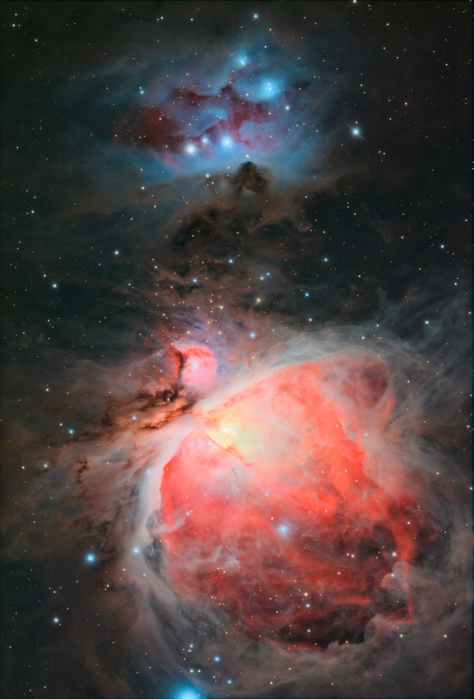</p>
<div style="text-align: center;">
「M42 オリオン大星雲」<br>
2022年1月3日 19時40分 千葉県 九十九谷展望公園<br>
TOA-130NS+某フラットナー<br>
QHY268C<br>
Gain 26/Offset 50/-20℃/180s*65<br>
Total: 195min<br>
タカハシ EM-200 TemmaPC Jr. + MGEN-3<br>
Adobe Lightroom CC / Photoshop CC / PixInsight<br><br>
</div>

<p>星像も申し分なく，美しいのですが，某補正レンズ + APS-C のおかげでフラット補正は全くの不要．これは一つ撮影時のストレスが減っていいなあと思います．<br>またこの日はしぶんぎ座流星群のピークでもあり，カメラをしかけてはいましたがあまり大した流星は写りませんでした．目ではいくつか見えたんですけどね．</p>
<p><video src="timelapse01.mp4" width="720" height="720" controls></video><br>動画だとわかりにくいかもしれませんが、最初に2つほど流星が写っているのが確認できます．<br>観望地としてトイレも使えたのはこの時期とてもありがたかったです．トイレ前には自販機もあります．ただ人気スポットなのか，明け方は流星群目当てで多くの車が集まりました．酔っぱらいのにいちゃんにも絡まれました(TOA，しまった後でよかった)．<br>帰りは<a href="https://www.youtube.com/watch?v=-lSCmI9lP08&amp;t=249s" target="_blank" rel="noopener">坂本真綾ファンならわかる某スポット</a>に立ち寄って帰宅．海ほたるでは行きと帰りで夕焼け朝焼け両方見ることができました．<br>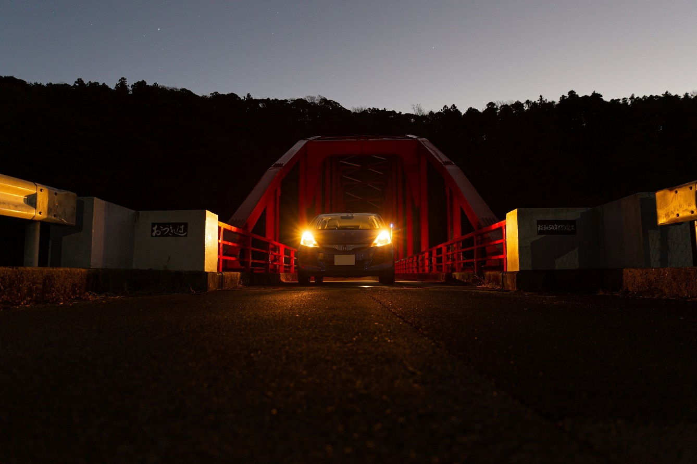<br>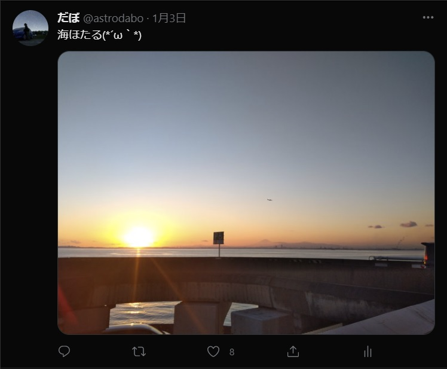<br>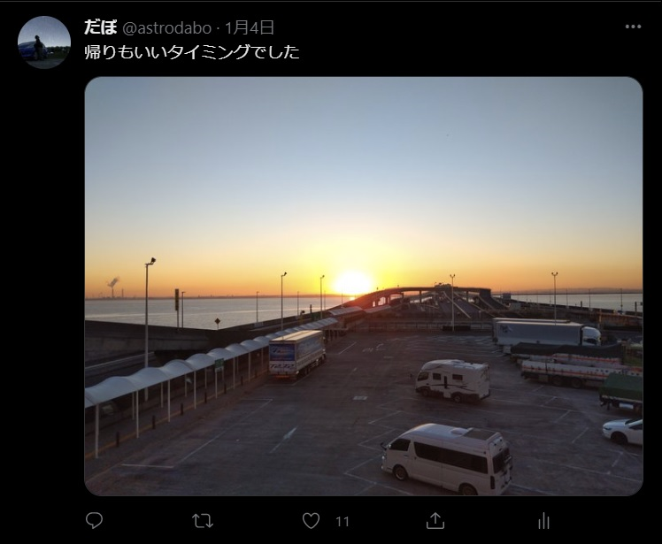</p>
<h3 id="2022年3月-西湖-星の村"><a href="#2022年3月-西湖-星の村" class="headerlink" title="2022年3月　西湖/星の村"></a>2022年3月　西湖/星の村</h3><p>2月は月を眺めたくらいで遠征はせず．三月に入り河口湖くらいになら行ってもいいかなと思い育樹祭記念広場を目指しました．ところが近づくについれて残っている雪の量も多く，夜間は凍結するだろうなという場所が増えていきます．こういった事態は予め想定して日の入り前に判断することにしていましたが，着いてみるとラスト数百m は完全に凍っていて怖いです，スタックしたら明らかに終わりなのは見えています．<br>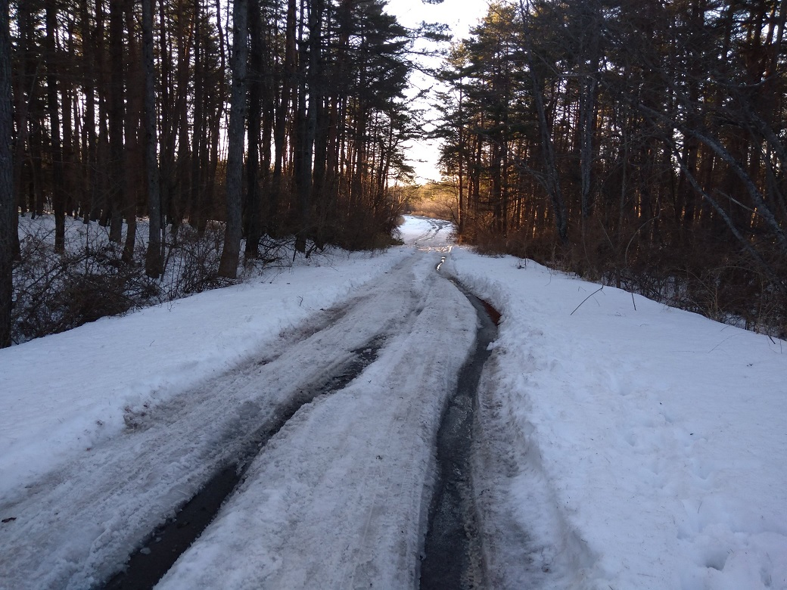<br>どうやらここは普段からあまり整備はされていないようです．残念ですが育樹祭記念広場は別の機会に諦め，西湖近くの駐車場に決めました．ここもトイレがあって良いです．<br>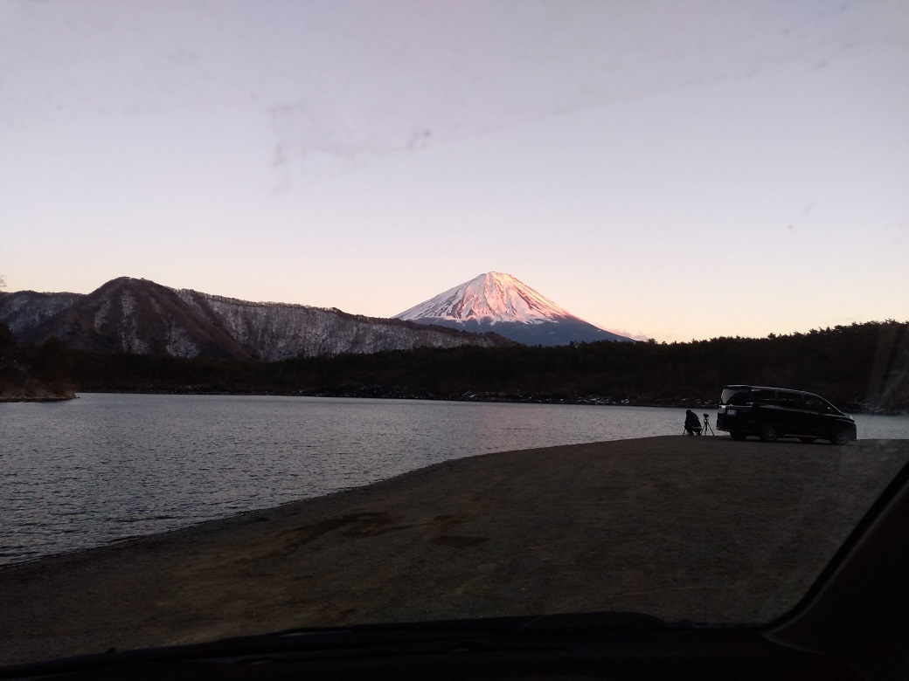<br>が，1時頃には曇ってしまい，機材を片付けても晴れてこなかったので早めに帰宅．高速降りてからは車も少なくほぼノンストップで帰宅することができて感動．<br>西湖で不完全燃焼だったので，よく一緒に観測に行くH君と<a href="https://twitter.com/Watanabe_3010" target="_blank" rel="noopener">渡部君</a>を誘って星の村へ．<br>到着して撮影を始めるも，EM-11 の追尾がうまくいきません．なんか赤経方向に振動しているような挙動をします．クランプを締めたり，電源系統を変えてみたり色々やってみましたが原因は不明．春はよく機材トラブルに見舞われる僕です．僕は機材と奮闘しつつ，TOA は他の二人に丸投げして色々見てもらいました()．結局帰宅後地元でやり直したらそこそこうまくいった（というか，星の村での僕が追尾に厳しすぎた？あるいは後述のように色ズレが追尾エラーに見えただけ）ので，本当に原因はよくわかりません．EM-11 はカメラレンズ用にして，EM-200クラスの赤道儀もう一台あってもいいかなとは正直思っています．<br>僕の地元からレンタカーにしたらめちゃくちゃお金かかってしまい（特にまだ学生の渡部君には）申し訳なさ．晴れたからまだ良かったですけどね．<br>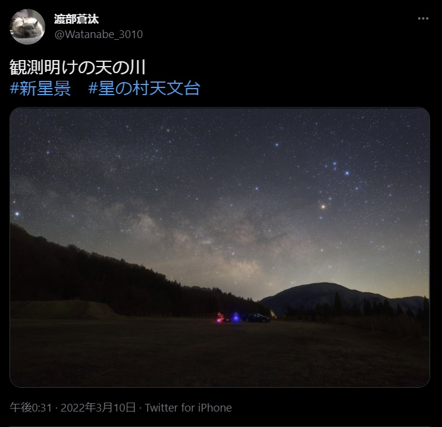<br>僕が意気消沈しているなか，渡部くんが撮影の様子を写してくれていました．ありがたや．<br>この月はクラゲ星雲やマルカリアンのあたりを撮影していましたが，前述の通りで出せるクオリティにはならなかったので諦め．ちーん．</p>
<h3 id="2022年4月-大洗-朝霧-原村連泊"><a href="#2022年4月-大洗-朝霧-原村連泊" class="headerlink" title="2022年4月　大洗/朝霧-原村連泊"></a>2022年4月　大洗/朝霧-原村連泊</h3><p>4月初めは所属していたサークルの後輩と大洗へ．曇りました（完）．でも途中に寄った福岡堰の桜がとてもきれいで，本当に2年ぶりくらいに 135mm が稼働しました．この日は観測ではなく桜を見に来たんや．<br>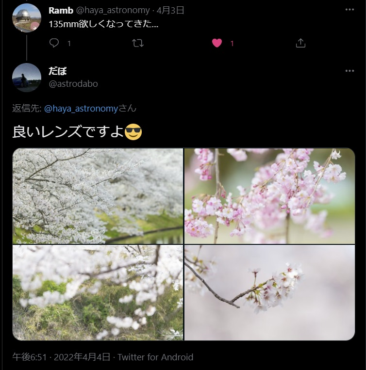<br><a href="https://twitter.com/astrodabo/status/1510917882766528514" target="_blank" rel="noopener">(元ツイート)</a></p>
<p>とはいいつつ途中眼視をやるくらいには晴れてくれました．M13 や上ってくるアルビレオなどを見たり．惑星ランデブーも見ることができました．<br>帰りに牛久大仏にも寄りました．想像以上に大きい．<br>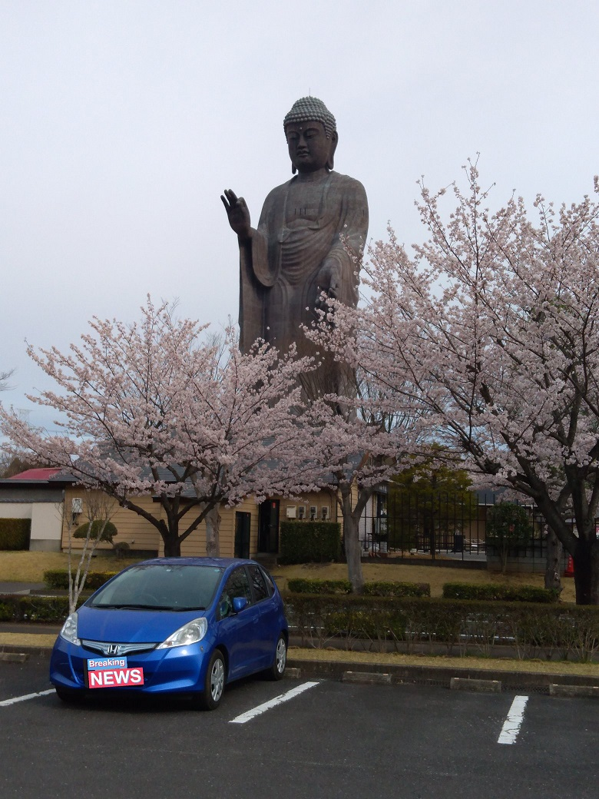<br>ビームを撃たれて車を破壊されそう．</p>
<p>翌週はリベンジを果たすため一人で連泊．初日は朝霧です．天道（いつもの）に寄って夕飯をとり到着すると，なんか大きな車がたくさん，それと犬の鳴き声がすごい．どうやら翌日土曜日と日曜日にドッグイベントがあるそうです，全然気付かなかった…．まあライトに常時照らされるとかがなければ別段文句もありませんが，今度からはちゃんと調べるようにします．こちらも駐車スペースを取ってしまいますからね．朝霧には<a href="https://twitter.com/N_Tosh2045" target="_blank" rel="noopener">N_tosh</a>さんや<a href="https://twitter.com/AstronomyPisuke" target="_blank" rel="noopener">ピースケ</a>さん，<a href="https://twitter.com/7oY10" target="_blank" rel="noopener">トニー</a>さんなどがいらっしゃっており，少しお話などさせていただきました．N_tosh さんはたまたま近くに停められたので，色々見ていただきました．お付き合いいただきありがとうございました．<br>撮影の方は前半はM64，後半はアンタレス付近です．月が上弦だったので前半はゆるゆると．アンタレス付近は翌夜の原村でも撮影予定でした．晴天の暗い空で改めて M13 を見てみましたが，素晴らしく見応えがあります．ピントリングを合わせてから振動が収まったあとの球状星団を構成する星々の粒子感，TAK3.3-UWでもしっかりと中心付近の星々が分離して見え，まるで星の海に飛び込んだようで思わず声が漏れます．M27, M57 などの星雲もひじょうによく見えます．本撮影中の暇な時間に眼視に興じるのは QOL が爆上がりです．<br>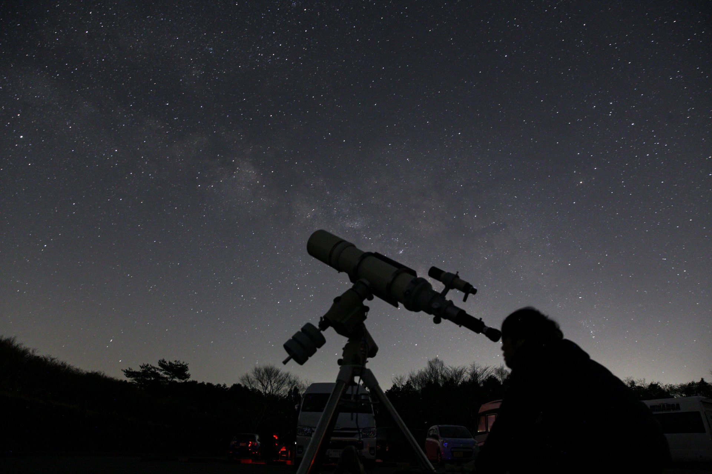<br>そんなこんなで朝になると，駐車場の外でドッグイベントのための車列とワンちゃんの鳴き声が凄まじいことになっていました．このままいても迷惑だろうと思い片付けて撤収．精進湖から358号，36号と通って南アルプス方面へと向かいます．</p>
<p>やまなみの湯で温泉をキメて，ネカフェで充電．すっかり連泊スタイルが板についてきた気がします．<br>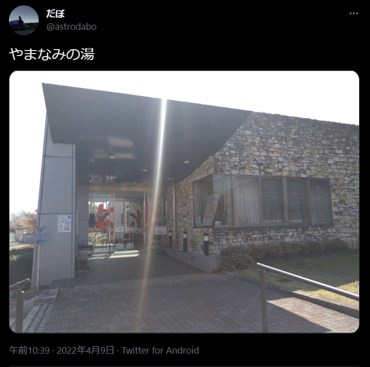<br>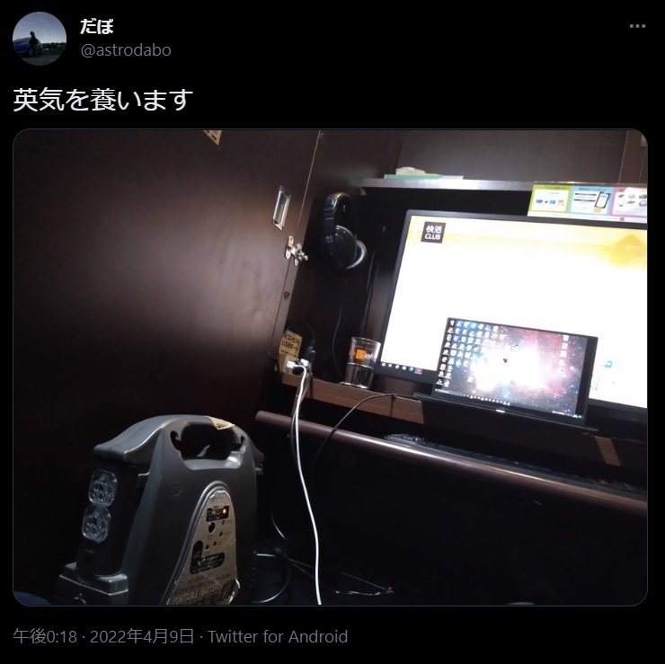<br>この日は充電器を忘れてしまいましたが，ケーブルはあったのでなんとかなりました．危うく二泊目の原村を諦めるハメになるところでした．<br>夕方頃まで寝られたので，コンビニに寄って原村へ．到着すると，月齢も渋いからか人は全然いません．<br>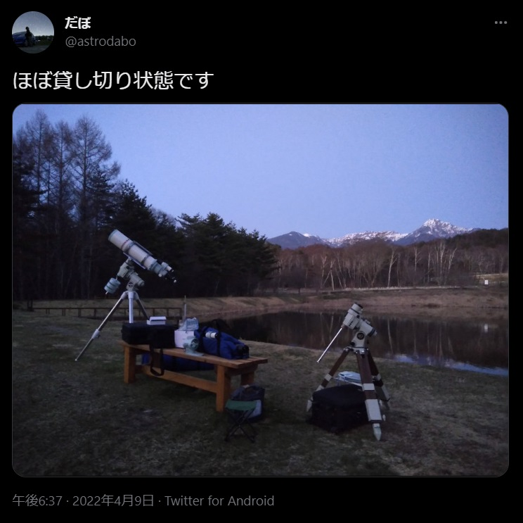<br>途中からH君ら御一行が現地合流してくれると連絡があったので，コンビニで買い忘れたサラダをパシってのんびり過ごします．</p>
<p>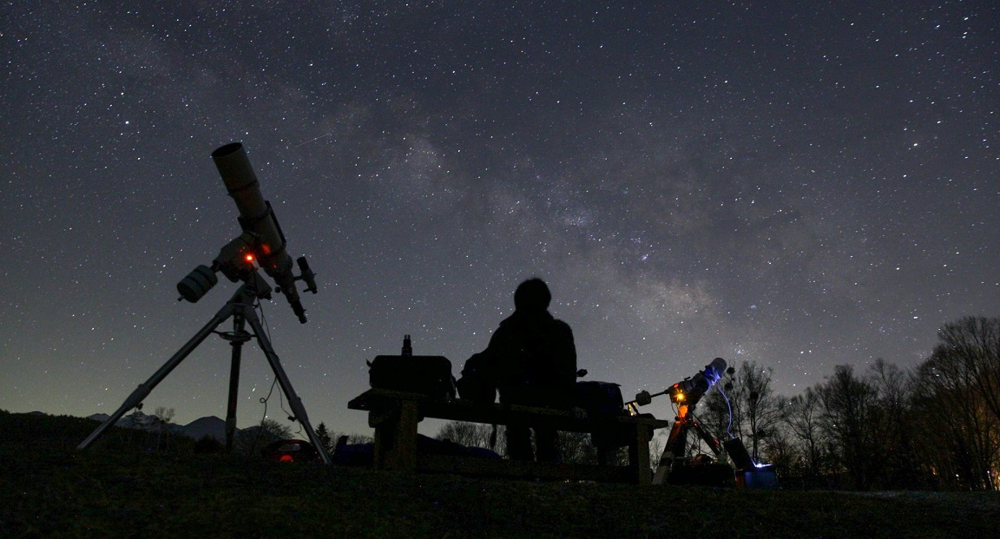<br>連泊で疲れていたので，撮影機材は温度順応で出しつつも月が沈むまでは眼視のみ．アンタレス付近が撮影できるようになったあたりで撮影開始．途中，原村在住の町おこし団体のスタッフさん的な方がお子さんたちといらして，TOA で月を見てもらいました．小学生に（ほぼ）無収差を見せつけるという大変教育によろしくないことをしたような気がしますが，少しでも宇宙分野に興味をもってもらえたら嬉しいですね．</p>
<p>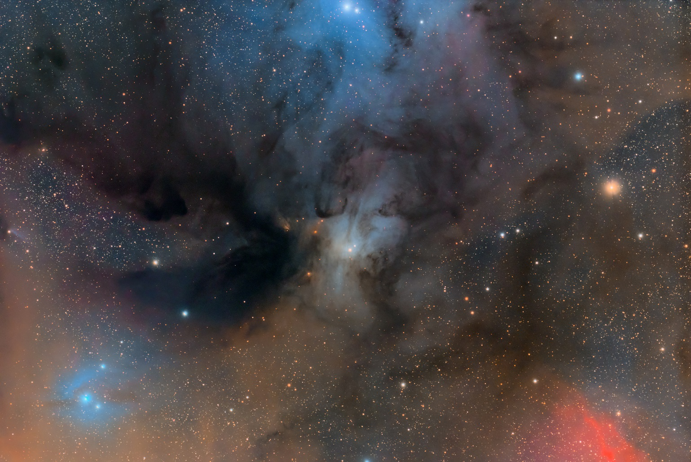</p>
<div style="text-align: center;">
「へびつかい座ロー星付近」<br>
2022年4月9日～4月11日 静岡県朝霧高原，長野県原村まるやち湖駐車場<br>
FSQ-85EDP+Flattener 1.01X<br>
QHY268C<br>
Gain 26/Offset 50/-20℃/180s*107<br>
Optolong L-Pro
Total: 321min<br>
タカハシ EM-11 Temma2 Jr. + MGEN-3<br>
Adobe Lightroom CC / Photoshop CC / PixInsight<br>
<a href="https://www.astrobin.com/wnm4uv/C/" target="_blank" rel="noopener">AstroBin</a><br><br>
</div>

<p>というわけで二晩の星果はこんな感じ．原村ではピントを合わせた際に固定ネジを締め忘れ，なんならカメラ回転装置の固定ねじすら締め忘れているというグダグダっぷりで，星の周りに赤っぽいハロが盛大に出てしまいました．QHY カメラを APT で速いフレームレートでライブビューする手段は（ソフトを調べてみましたが）今のところなさそうなので，毎回 SharpCap に移動しているのですが，普通に考えて一つのソフトで完結させたほうが絶対良いよなあという気がします．ソフト切り替えは毎回ミスの温床です．まだ使ったことないソフト（NINAとか？）に手を出してみようかなあとも思っています．<br>薄明開始と同時にサクッと帰宅開始．中央道では毎回初狩手前あたりで眠気の限界を迎えるんですが分かる人いますか？特に機材フル稼働で二連泊だと腰もイカれててなかなかキツイ．安全第一です．</p>
<h3 id="2022年5月-清里-原村連泊"><a href="#2022年5月-清里-原村連泊" class="headerlink" title="2022年5月　清里-原村連泊"></a>2022年5月　清里-原村連泊</h3><p>5月は心の奥底に眠っていたS字星雲を取りたい気持ちが復活してきたので連泊でこれを撮りに行きたいと思います．東京と群馬で友人を拾って関越道経由で野辺山方面に向かいます．<br>萌木の村でカレーを食べて，初日は清里美し森です．</p>
<p>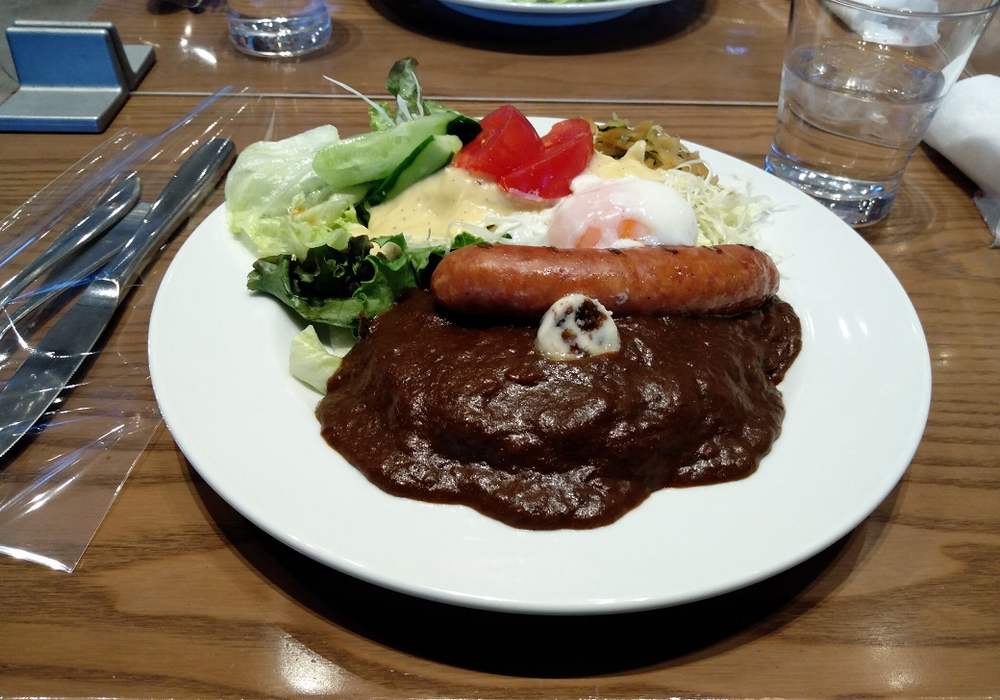</p>
<p>到着すると星はなんとなく見えていますが雪が舞っています．止んだので TOA を出したらまた舞い始めます，嫌がらせか．結局12時頃まで待機していたらすっかり晴れて，この日の露光は完遂．</p>
<p>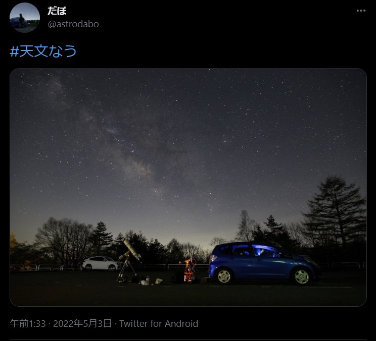</p>
<p>そうそう，FSQ 撮影の微光星に一様な色ズレが出てしまうのが最近の悩みなのですが，個人的に鏡筒以降のスケアリングが合ってないのかなあと勝手に考えています．カメラかフィルターが光軸に対して斜めになっているとか．正直ガチ撮影からはもう身を引きたいのであまり考えないようにはしているのですが，この日は二泊を使って試しにフィルターありとなしで撮影してみることにしました．<br>清里では青白いきれいな流星を見ることができました．他の場所でも何人か見ている方がいらしたようです．<br>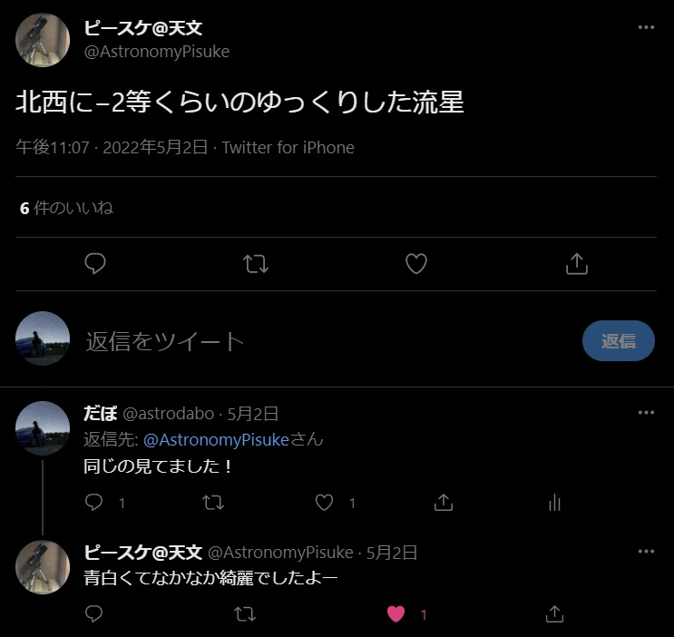</p>
<p>翌朝は花いずみの湯で温泉に入り（ここはサウナはそこそこで水風呂が冷たい），中村農場で親子丼を食べ，諏訪のネカフェで充電です．<br>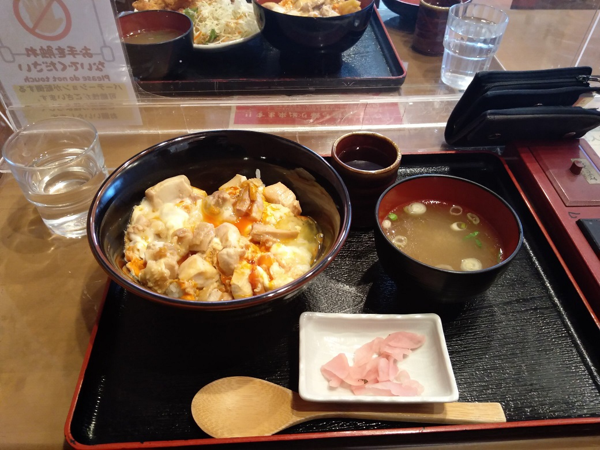<br>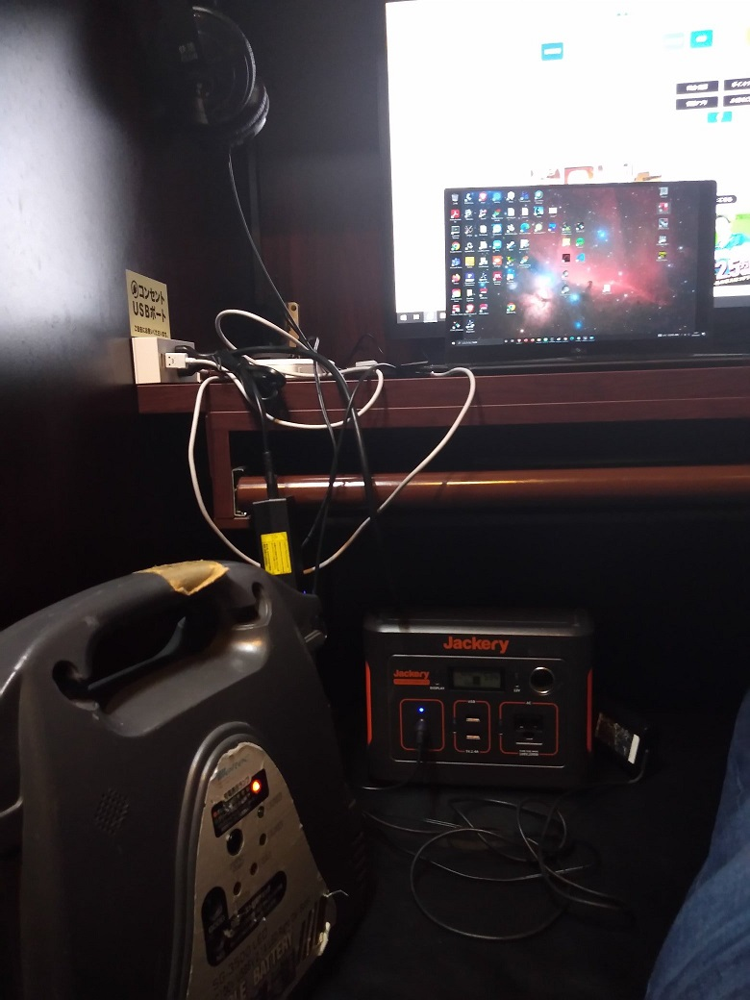<br><a href="https://twitter.com/haya_astronomy" target="_blank" rel="noopener">Ramb</a>君とどこかで落ち合えたらいいね～という話をしていたのですが，目が覚めると彼はもう原村に到着しているようです．しかも4月の時と違って先客が多いみたいです．そりゃ新月期の GW ですからねぇ．寝ている仲間を叩き起こして急いで向かいます．なんとか日の入り前に到着．車と撮影場所を確保できました．<br>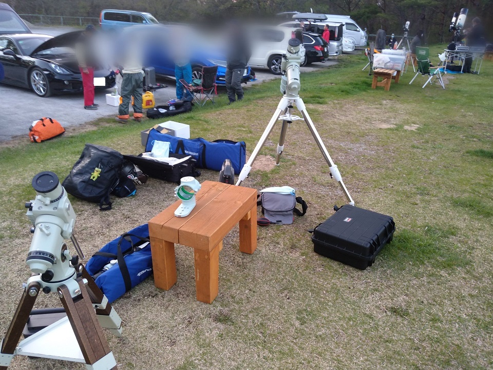<br>この日は Ramb くんの他に 渡部君，<a href="https://twitter.com/antales" target="_blank" rel="noopener">流れ星君</a>もいらしていました．せっかくなので 135mm を使ってもらいました．どうせ僕は使う予定もありませんでしたので．<br>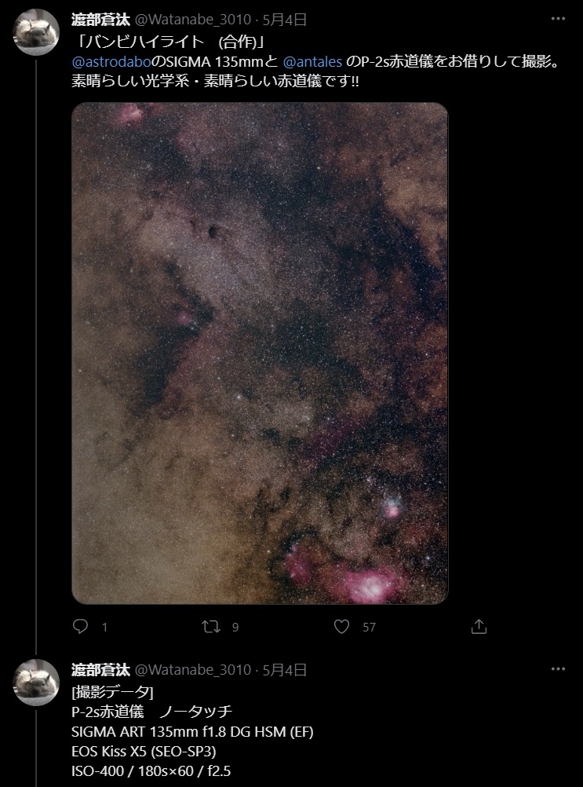<br><a href="https://twitter.com/Watanabe_3010/status/1523558987878191104" target="_blank" rel="noopener">(元ツイート)</a><br>日付も変わり，本撮影開始後1時間あまりで体力の限界がきたので薄明前まで全機材を放置して寝てしまっていました．<br>起きてのんびり撤収．帰りは 299 号を使って小海リエックスの温泉に寄ります（ここはサウナがめちゃめちゃ暑くて水風呂がそこそこ温くて心地よい）．去年の星祭りぶりですね．食べ物を取ると眠くなるので食べ物を取らずに群馬方面に向かいつつ，途中で妙義に寄りました．中之嶽神社と妙義神社の本殿まで登らされました．なんか食べてから行けばよかった（）．</p>
<p>撮ったものの紹介を忘れていました．S字状暗黒星雲のあたりです．ぶっちゃけこのあたりは中途半端な焦点距離で撮ってもあまり面白くないかもしれません()．でも <a href="https://sorae.info/astronomy/20201130-barnard68-vlt.html" target="_blank" rel="noopener">Barnard 68</a> などの存在も確認できるのでそれは面白いかも．</p>
<p>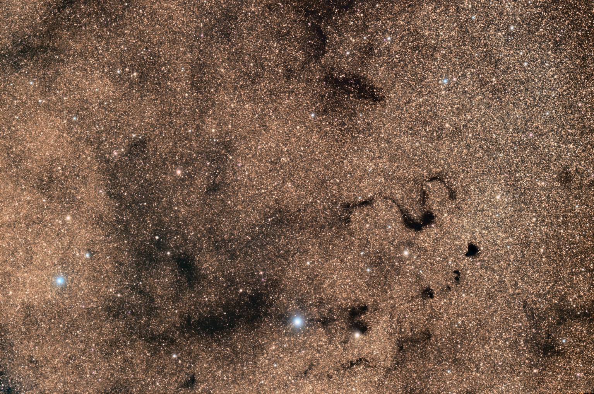</p>
<p><div style="text-align: center;">
「S字状暗黒星雲周辺」<br>
2022年5月3日～5月5日 山梨県美し森駐車場，長野県原村まるやち湖駐車場<br>
FSQ-85EDP+Flattener 1.01X<br>
QHY268C<br>
Gain 26/Offset 50/-20℃/180s*113<br>
Optolong L-Pro(56 frames)
Total: 339min<br>
タカハシ EM-11 Temma2 Jr. + MGEN-3<br>
Adobe Lightroom CC / Photoshop CC / PixInsight<br>
<a href="https://www.astrobin.com/n8rwxf/" target="_blank" rel="noopener">AstroBin</a><br><br>
</div><br>色ズレについては先程フィルターが原因？ということで書いたのですが，改めてフィルターなしの画像を見ても若干ズレている感じがします．<br>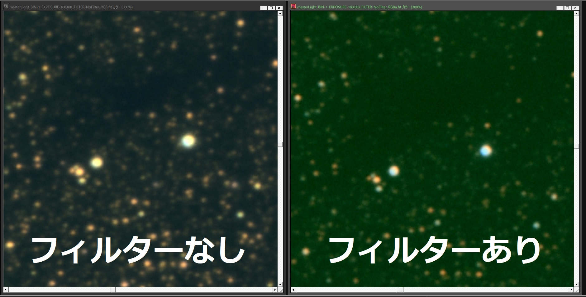<br>これは光学系か～？と思いつつ，一様な色ズレっぽく今のところソフト的に補正できる（RGBごとに Star Align して再合成）ので入院は時間がある時にしたいと思います()．<br>5月後半は栃木県へ行きましたが，記事がめちゃくちゃ長くなってきたので分けたいと思います．<br>それではまた次回．</p>

		
	</div>
	<footer class="article-footer">
		<a href="https://twitter.com/intent/tweet?text=2022%E5%B9%B4%E5%89%8D%E5%8D%8A%E3%81%AE%E9%81%A0%E5%BE%81%E3%82%92%E6%8C%AF%E3%82%8A%E8%BF%94%E3%82%8B%EF%BC%88%E3%81%9D%E3%81%AE1%EF%BC%89｜%E3%81%BB%E3%81%97%E3%82%88%E3%81%BF%E5%A4%A7%E5%AD%A6%E7%94%9F%E3%81%AE%E3%83%96%E3%83%AD%E3%82%B0&url=http://dabokun.github.io/2022/05/15/00000063-2022-first-half-lookback01/" class="twitter-share-button" target="_blank" title="Twitter"></a>
		<script async src="https://platform.twitter.com/widgets.js" charset="utf-8"></script>

		<div id="fb-root"></div>
		<script async defer crossorigin="anonymous" src="https://connect.facebook.net/ja_JP/sdk.js#xfbml=1&version=v4.0"></script>
		<div class="fb-share-button" data-href="http://dabokun.github.io/2022/05/15/00000063-2022-first-half-lookback01/" data-layout="button_count" data-size="small"><a target="_blank" href="https://www.facebook.com/sharer/sharer.php?u=https%3A%2F%2Fdabokun.github.io%2F&amp;src=sdkpreparse" class="fb-xfbml-parse-ignore">シェア</a></div>
	</footer>
	<footer class="entry-footer">
		<div class="entry-meta-footer">
			<span class="category">
				
  <div class="article-category">
    <a class="article-category-link" href="/categories/expedition/">遠征記</a>
  </div>

			</span>
			<span class=" tags">
				
  <ul class="article-tag-list"><li class="article-tag-list-item"><a class="article-tag-list-link" href="/tags/camera/">カメラ</a></li><li class="article-tag-list-item"><a class="article-tag-list-link" href="/tags/lens/">レンズ</a></li><li class="article-tag-list-item"><a class="article-tag-list-link" href="/tags/photography/">写真</a></li><li class="article-tag-list-item"><a class="article-tag-list-link" href="/tags/astrophotography/">天体写真</a></li><li class="article-tag-list-item"><a class="article-tag-list-link" href="/tags/equipments/">機材</a></li><li class="article-tag-list-item"><a class="article-tag-list-link" href="/tags/mount/">赤道儀</a></li><li class="article-tag-list-item"><a class="article-tag-list-link" href="/tags/expedition/">遠征記</a></li><li class="article-tag-list-item"><a class="article-tag-list-link" href="/tags/telescope/">鏡筒</a></li></ul>

			</span>
		</div>
	</footer>
	
	
<nav id="article-nav">
  
    <a href="/2022/09/02/00000064-2022-05-06/" id="article-nav-newer" class="article-nav-link-wrap">
      <strong class="article-nav-caption">Newer</strong>
      <div class="article-nav-title">
        
          2022年前半の遠征を振り返る（その2）
        
      </div>
    </a>
  
  
    <a href="/2022/02/19/00000062-lunar-photo/" id="article-nav-older" class="article-nav-link-wrap">
      <strong class="article-nav-caption">Older</strong>
      <div class="article-nav-title">
        
          初めての（？）月面撮影
        
      </div>
    </a>
  
</nav>

	
</article>


<section id="comments">
	<div id="disqus_thread">
		<noscript>Please enable JavaScript to view the <a href="//disqus.com/?ref_noscript">comments powered by
				Disqus.</a></noscript>
	</div>
</section>

    </div>
    <div class="mb-search">
  <form action="//google.com/search" method="get" accept-charset="utf-8">
    <input type="search" name="q" results="0" placeholder="Search">
    <input type="hidden" name="q" value="site:dabokun.github.io">
  </form>
</div>
<footer id="footer">
	<h1 class="footer-blog-title">
		<a href="/">ほしよみ大学生のブログ</a>
	</h1>
	<span class="copyright">
		&copy; 2022 astr0dab0<br>
		Modify from <a href="http://sanographix.github.io/tumblr/apollo/" target="_blank">Apollo</a> theme, designed by <a href="http://www.sanographix.net/" target="_blank">SANOGRAPHIX.NET</a><br>
		Powered by <a href="http://hexo.io/" target="_blank">Hexo</a>
	</span>
</footer>
    
<script>
  var disqus_shortname = 'astr0dab0';
  
  var disqus_url = 'http://dabokun.github.io/2022/05/15/00000063-2022-first-half-lookback01/';
  
  (function(){
    var dsq = document.createElement('script');
    dsq.type = 'text/javascript';
    dsq.async = true;
    dsq.src = '//go.disqus.com/embed.js';
    (document.getElementsByTagName('head')[0] || document.getElementsByTagName('body')[0]).appendChild(dsq);
  })();
</script>


<script src="//ajax.googleapis.com/ajax/libs/jquery/2.0.3/jquery.min.js"></script>


<link rel="stylesheet" href="/fancybox/jquery.fancybox.css" media="screen" type="text/css">
<script src="/fancybox/jquery.fancybox.pack.js"></script>


<script src="/js/script.js"></script>
  </div>
</body>
</html>